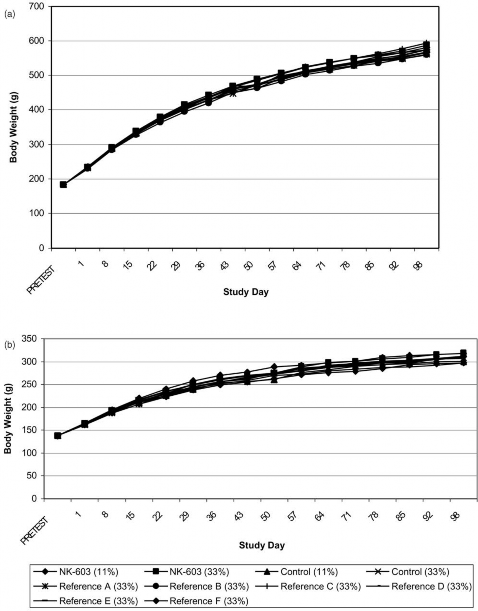
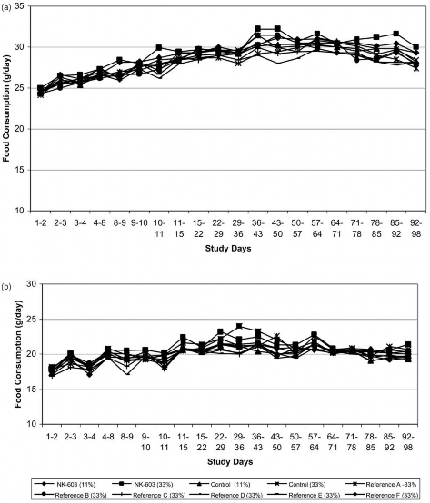

aMonsanto Company, 800 N. Lindbergh, St Louis, MO, 63167, USA
bMonsanto Company, Metabolism and Safety Evaluation-Newstead (MSE-N), 645 S. Newstead Ave., St Louis, MO 63110, USA
Received 18 June 2003; accepted 12 February 2004
Abstract
The current study presents the results of a 13 week feeding study in rats with grain from Roundup Ready1
corn which is tolerant to the herbicide glyphosate. Herbicide tolerance was accomplished through the introduction of cp4 epsps coding sequences into the corn genome for in planta production of CP4 EPSPS enzymes. Unlike related corn EPSPS enzymes, CP4 EPSPS enzymes are not inhibited by the herbicide glyphosate. Purina TestDiets formulated Roundup Ready corn grain into rodent diets at levels of 11 and 33% (w/w). The responses of rats fed diets containing Roundup Ready corn grain were compared to that of rats fed diets containing non-transgenic grain (controls). All diets were nutritionally balanced and conformed to Purina Mills, Inc. specifications for Certified LabDiet 5002. There were 400 rats in the study divided into 10 groups of 20 rats/sex/group. Overall health, body weight, food consumption, clinical pathology parameters (hematology, blood chemistry, urinalysis), organ weights, gross and microscopic appearance of tissues were comparable between groups fed diets containing Roundup Ready and control corn grain. This study complements extensive agronomic, compositional and farm animal feeding studies with Roundup Ready corn grain, confirming it is as safe and nutritious as existing commercial corn hybrids.
# 2004 Elsevier Ltd. All rights reserved.
Keywords: Corn; Genetically modified; Herbicide tolerant; Roundup herbicide; Rat feeding study
Introduction
National and international regulatory authorities require that food produced through biotechnology meet the same safety standards as food grown conventionally; there must be ‘‘reasonable certainty that no
harm will result from intended uses under the anticipated conditions of consumption’’ (OECD, 1993). The food safety standard for biotech food therefore is that these foods must be as safe as food produced by conventional varieties.
Abbreviations:
ANOVA, analysis of variance; EMBL, public genetic database maintained by the European Molecular Biology Laboratory at the European Bioinformatics institute, Hinxton, England; CP4 EPSPS, 5-enolpyruvylshikimate-3-phosphate synthase from Agro-bacterium tumefaciens ssp. strain CP4; kDa, kilodalton; kg, kilogram; GenBank, genetic database maintained by the National Center for Biotechnology Information, National Institutes of Health, Bethesda, Maryland; NOEL, no-observed-effect level; PIR, Protein Information Database; ppb, parts per billion; SwissProt, a public protein database maintained by the Swiss Institute of Bioinformatics, Geneva Switzerland, and the European Molecular Biology Laboratory at the European Bioinformatics Institute, Hinxton, England; mg, microgram; w/w, (weight/weight).
The World Health Organization (WHO, 1995) and the United Nations Food and Agricultural Organization (WHO, 1991; FAO, 1996) and Organization for Economic Cooperation and Development (OECD, 1993 and 1997) have established a safety assessment process to assure that new foods are as safe as food produced from conventionally bred crops. This assessment process considers two main categories of potential risk; those related to the properties and function of the introduced trait, and those resulting from insertion of the introduced gene(s) into the plant genome that might theoretically cause unintended (pleiotropic) effects. The risk assessment is a comparative safety assessment using conventional food with a history of safe consumption as a reference point for all comparisons. The outcome of this assessment is to assess whether the genetically
modified crop is comparable to the existing non-trans-genic crop. Defined differences such as the introduced trait(s) are independently assessed for safety.
0278-6915/$ - see front matter # 2004 Elsevier Ltd. All rights reserved. doi:10.1016/j.fct.2004.02.013
Roundup Ready corn (event nk 603) was produced by the stable insertion of coding sequences that express glyphosate-tolerant, 5-enolpyruvylshikimate-3-phosphate synthase (EPSPS) proteins. EPSPS is a key enzyme in the shikimic acid pathway (Franz et al., 1997)
for the biosynthesis of aromatic amino acids (phenylalanine, tyrosine, tryptophan). The shikimic acid pathway is only present in plants and microorganisms and is absent in mammals, fish, birds, reptiles, and insects, and is thus a good target for novel herbicides (Alibhai and Stallings, 2001). Glyphosate (N-phosphonomethyl glycine), the active ingredient in Roundup11
agricultural herbicides, inhibits the EPSPS enzyme, thereby starving plants of aromatic amino acids (Steinrucken and Amrhein, 1980; Haslam, 1993).
The glyphosate tolerant EPSPS enzyme (designated as CP4 EPSPS) introduced into corn plants is functionally similar to plant EPSPS enzymes but has a much reduced affinity for glyphosate (Padgette et al., 1996). The cp4 epsps coding sequence derived from Agrobacterium sp.
strain CP4 encodes a 47.6 kDa CP4 EPSPS protein consisting of a single polypeptide of 455 amino acids. In Roundup Ready corn, there are two forms of CP4 EPSPS proteins that differ by one amino acid, proline versus leucine at amino acid position 214 in the encoded protein. Both enzymes show equivalent enzymatic activity in vitro for converting their normal substrates, shikimate-3-phosphate and phosphoenolpyruvate to 5-enolpyruvylshikimate-3-phosphate (EPSP), the precursor for aromatic amino acid synthesis (Heck et al., in press).
The CP4 EPSPS protein with leucine at position 214 has been introduced into other crops such as soybeans, canola, sugar beets and cotton to provide herbicide tolerance. Plants that demonstrate a commercial level of tolerance to Roundup herbicide are called Roundup Ready12.
The nutritional requirements for aromatic amino acids to support the normal growth and development of Roundup Ready plants are met by the continued action of the glyphosate-tolerant CP4 EPSPS enzyme in the presence of glyphosate (Padgette et al., 1996). A comprehensive safety assessment of the CP4 EPSPS protein has been previously reported (Harrison et al., 1996).
The second aspect of the safety assessment includes testing for potential pleiotropic effects resulting from insertion of cp4 epsps coding sequences into the corn genome or as a consequence of enzyme activity associated with the introduced CP4 EPSPS enzymes. Testing involves a comparative safety assessment of the transgenic variety (i.e., Roundup Ready corn) with nontransgenic corn varieties that serve as a reference for all comparisons (Dybing et al., 2002). The comparative safety assessment includes three main components: (1) an agronomic assessment in field trials; (2) compositional assessment of corn grain and forage; (3) nutritional/safety assessment of corn grain and forage in animal feeding studies.
1 Roundup agricultural herbicides are registered trademarks of Monsanto Technology, LLC.
2 Roundup Ready is a registered trademark of Monsanto Technology, LLC.
Agronomic assessments for corn include examination of various parameters such as yield, plant height, silk date, dropped ears, stalk rating, root strength, plant vigor, susceptibility to pathogens/pests, etc. (Astwood and Fuchs, 2000). These parameters have been developed by corn breeders following many years of conventional breeding of corn, and are used in selecting varieties that have optimal agronomic parameters to ensure performance in the market place. Since the agronomic requirements are so rigorous, very few corn varieties developed through conventional breeding are commercialized. Comparisons of the agronomic characteristics of Roundup Ready corn with conventional corn show no differences in phenotype, yield or other measured agronomic parameters listed above
(USDA, 2001).
Compositional assessments included a comprehensive comparison of 51 nutritional biochemical components of Roundup Ready corn to conventional corn grown during 1998 and 2000 in the United States, and during 1999 for corn grown in Europe. The field trials and compositional analyses were carried out in compliance with EPA Good Laboratory Practice (GLP) standards. Grain was collected from replicated field trials and was measured for proximates (protein, fat, ash, etc.), fiber, amino acids, fatty acids, vitamin E, nine minerals, phytic acid, trypsin inhibitor, and selected secondary metabolites. Forage was also collected and measured for proximates and fiber. All comparisons showed that Roundup Ready corn is compositionally comparable to conventional corn hybrids (Ridley et al., 2002). These studies demonstrated that the insertion and expression of cp4 epsps coding sequences do not alter the proportion of aromatic amino acids associated with the shikimic acid pathway (the site of EPSPS activity).
The study design was adapted from OECD Guideline No. 408 (1981) and the study was conducted in general compliance with OECD Good Laboratory Practice (GLP) guidelines at the Metabolism and Safety Evaluation-Newstead, toxicology laboratory.
Animals and maintenance
Male and female Sprague–Dawley derived rats (Crl:CD1(SD)IGS BR) from Charles River Laboratories (Raleigh, NC) were approximately 6 weeks of age at study start. Rats were housed individually and provided food and water ad libitum. The testing facility provided appropriate environmental conditions (22 ± 3oC room temperature, 12-h light/dark cycle, 40– 60% humidity, 10–15 air changes/h), and cage rack location within the animal room was rotated weekly.
Test and control substances
Corn grain from Roundup Ready corn and its control [background genetics representative of the test line but lacking the nk 603 transgene (transformation event)] were grown at field test sites in Ohio during the 1999 growing season. Roundup herbicide was applied to Roundup Ready corn plants during the growing season at commercial rates of application. Commercial, nontransgenic reference control corn grain representing a diversity of germplasm served as reference controls and were grown in various geographical locations in the United States (Ohio, Indiana, Iowa and Colorado) dur
ing the 1999 growing season. The purpose of these reference controls was to approximate the normal range of responses of rats fed different commercial, non- transgenic corn grain since these data were not available. Prior to the advent of biotechnology, newly developed corn hybrids were not fed to rats in 90 day toxicology studies. The only historical data available was that for control rats at the testing laboratory that were fed grain from non-transgenic corn varieties incorporated into commercial rodent diets. The grain samples used for diet preparation were analyzed for nutrient compo- nents, pesticide residues (Covance Laboratories, Madison, WI, USA) including glyphosate (Monsanto Company, St. Louis, MO) and mycotoxins (Romer Labs, Union, MO). The identity of Roundup Ready corn grain was confirmed by nk 603 event-specific polymerase chain reaction (PCR) analysis, the control line served as the negative control in the assay. The identity of reference control grain was confirmed by chain of custody records.
Experimental diets
Diets containing test, control and reference control grain were formulated by Purina TestDiet (Richmond, IN) to be nutritionally and compositionally comparable to PMI Certified Rodent LabDiet13 5002. Many toxicology laboratories use this diet in rodent feeding studies. Roundup Ready corn, control, and reference control grains were ground and added to diets at levels of approximately 33% w/w, the standard incorporation rate for Certified Rodent LabDiet 5002. Roundup Ready corn and control corn were also added to diets at 11% w/w to assess any potential dose-response of effects that might be observed at the 33% dietary level. To be consistent with all the other diets in the study, corn grain supplied by Purina TestDiet was added at 22% w/w to the 11% w/w corn grain diets to bring the total corn grain content up to 33% w/w, consistent with other diets. Following diet preparation, samples of all diets were analysed (Covance Laboratories, Madison, WI, USA) to confirm formulated diets met PMI specifications for certified 5002 rodent diet.
Experimental design and treatment
Following acclimation to laboratory conditions, animals were assigned to one of ten experimental groups (20/sex/group) by stratified randomization so that mean body weights did not differ significantly (P < 0.05) among treatment groups. Table 1 contains an outline of the experimental groups and treatment regimen.
a
Control and reference controls are non-transgenic varieties.
3 PMI Certified LabDiet 5002 is a registered trademark of Purina Mills, Inc.
Clinical observations
All animals were observed twice daily for mortality and moribundity and once daily for overt signs of toxicity; physical examinations were given weekly. Individual body weights were obtained one day prior to group allocation and weekly thereafter. Individual food consumption was determined weekly except during pre-test (week –1) and week 1. During week–1, all animals were fed PMI Certified LabDiet 5002 and food consumption was determined on days 1, 2, and 3 and again for days 4 through 7 to obtain baseline data on food consumption. The animals were then provided the appropriate formulated diets containing test, control, or reference control grain. Food consumption was determined on days 1, 2, and 3 and again for days 4 through 7 (week 1 only). This was compared with week–1 data to assess palatability of the diets. Animals continued on test, control, or reference control diets until the end of the study (week 13).
Clinical Pathology
Blood was collected under light halothane anesthesia, via the retro-orbital plexus from 10 rats/sex/group after week 4 and again (under CO2 anesthesia from the posterior vena cava) just prior to sacrifice. Animals were fasted overnight (18–23 h) but did have access to water. When possible, blood samples were collected from the same 10 animals at both collection periods.
Haematology
Endpoints included red blood cell count (RBC), total leukocyte count (WBC) and leukocyte differential count (NEU, LYM, etc.), platelet count (PLT), hematocrit (HCT), hemoglobin concentration (HGB), and red blood cell indices: mean corpuscular volume (MCV), mean corpuscular hemoglobin (MCH), and mean corpuscular hemoglobin concentration (MCHC). Whole blood was treated with anticoagulant (EDTA), and hematology parameters measured using a Technicon H1ETMSystem (Miles Inc., Elkhart, IN, USA) blood cell counter. Plasma prothrombin time (PT) and activated partial thromboplastin time (APTT) were determined from whole blood collected using sodium citrate as an anticoagulant from animals at terminal sacrifice.
Serum Chemistry
Endpoints included albumin (ALB), globulin (GLB – calculated), total protein (TP), blood urea nitrogen (BUN), total bilirubin (TBIL), direct bilirubin (DBIL), glucose (GLU), alanine aminotransferase (ALT), alkaline phosphatase (ALP), aspartate aminotransferase (AST), gamma glutamyl transferase (GGT), creatinine
(CREA), albumin/globulin ratio (A/G Ratio), calcium (CA), phosphorus (PHOS), chloride (CL), sodium (NA), and potassium (K). Serum chemistry parameters were measured using a Hitachi 717 clinical analyzer.
Urine Chemistry
Urine was collected on ice for 16–18 h from the same rats used for blood collection. Protein, pH, blood, ketones, bilirubin, glucose, and urobilinogen were assayed in urine samples with MULTISTIX
TMreagent strips and a CLINI-TEKTMurinalysis strip reader (Ames Company, Elkhart, IN, USA). Urine volume was measured. Urine specific gravity was determined using an American Optical T. S. Meter. Urine appearance and opacity were determined by inspection and reported by exception.Sediment, derived from centrifuging the urine sample, was examined microscopically to determine the presence of bacteria, epithelial cells, erythrocytes, leukocytes, casts, or abnormal crystals. Urine sodium, potassium, chloride, calcium, and phosphorus and creatinine clearance (calculated) were determined quantitatively using a Hitachi 717 clinical analyzer.
Pathology
At the end of the 13 week exposure period to test and control diets, all animals were anesthetized with CO2, sacrificed by exsanguination and given a complete gross pathologic examination. Adrenals, brain, heart, kidneys, liver, spleen, testes/ovaries were weighed, paired organs were weighed together. A full set of tissues was collected including: aorta, adrenals, bladder, brain, epididymides, esophagus, eyes, femur with joint, heart, intestine (ileum, jejunum, duodenum, colon, caecum), kidneys, lesions or abnormal masses, liver, lungs (with mainstream bronchi), lymph nodes (mesenteric and submaxillary), ovaries, pancreas, peripheral nerve (sciatic), pituitary, prostate, rectum, salivary glands, seminal vesicles, skeletal muscle (quadriceps femoris), skin (with mammary tissue), spinal cord (3 levels), spleen, sternum with marrow, stomach, testes, thymus, thyroid/parathyroid, trachea, uterus. Following collection, tissues were placed directly into 10% neutral buffered formalin for fixation.
Selected tissues [adrenal glands, brain, heart, small intestine (duodenum, jejunum, ileum), large intestine (colon, rectum), kidneys, liver, mesenteric lymph node, pancreas, spleen, stomach, thyroids, parathyroids, ovaries and testes] representing the major organs/systems from all animals fed 33% Roundup Ready corn grain and 33% control grain were processed, embedded in paraffin, sectioned (approximately 4 mm), and stained with hematoxylin and eosin using standard histological methods. A board-certified veterinary pathologist using light microscopy examined these tissues.
Statistical analysis
For quantitative measures, the high dose test group was compared to (a) the high dose control group and (b) the mean of the reference control population fed grain from the 6 different reference control varieties. The low dose test group was compared to the low dose control group. For each sex, a simple one-way analysis of variance (ANOVA) model fit the data and specific treatment combinations were compared using contrasts. For (b) above, the comparisons were done using a one-degree of freedom t-test generated from a contrast between the Roundup Ready group (test) and either the control group or the pooled reference control groups. Differences were considered statistically significant at p < 0.05 where both the ANOVA and the contrast were statistically significant. As part of the overall analysis, Levene’s test was used to compare group variances. If Levene’s test was significant (P40.01), the data were ranked and the analysis of ranked data was performed. The incidences of microscopic findings were analyzed using Fisher’s Exact Test. SAS1version 8 (SAS Institute Inc., Cary,
NC) was used for all statistical computations.
Results
Compositional, contaminant, and nutritional analysis of the experimental diets showed that they met the specifications for Certified Rodent LabDiet 5002 established by PMI. The levels of heavy metals, aflatoxins, chlorinated hydrocarbons, organophosphate insecticides, and glyphosate were below detection limits. For chlordane, the Covance Laboratories’ limit of detection was higher (250 ppb) than the maximum specified concentration of 50 ppb, but this was not considered to have an impact on the study. PCR analysis confirmed that the test diet contained Roundup Ready corn grain as it tested positive for the nk 603 transformation event. The control and reference control diets did not test positive for the nk 603 transformation event, as expected.
All of the 400 animals were healthy and appeared normal during the course of the study with the following two exceptions. One male from the 33% (high dose) Roundup Ready group was found dead on day 82. The animal had been healthy up to the time it was found dead and no apparent cause of death was determined at necropsy. Microscopic examination of tissues from this animal found no evidence for the cause of death. One male from a reference control group was euthanized on day 86 as it had a fractured nose and had markedly reduced food consumption. Neither of these deaths was considered test article related. There were no changes noted during the duration of the study in behavior,
activity, posture, gait, or external appearance in any of the groups in either sex (data not shown).
Body weight and food consumption
Overall, body weight and weight gain were comparable for the male and female Roundup Ready and control (both dose groups) and reference control groups (Fig. 1). A few statistically significant differences in week to week weight gain were observed, particularly in males, but these differences within the mean ± 2 standard deviations of the population of reference controls, appeared randomly among the groups and were either not dose related or not consistently observed throughout the study. They were not considered to be test article related. The overall growth of rats fed diets containing Roundup Ready corn grain was comparable to that of the animals fed diets containing control and reference control grain.
Food consumption was generally similar between test, control and reference control groups (Fig. 2). There were no differences in the palatability of the test and control diets. There were a few statistically significant differences observed in food consumption. The differences were within the mean ± 2 standard deviations of the population of reference controls, appeared randomly among the groups and were either not dose related or not consistently observed throughout the study. They were not considered to be test article related.
Clinical pathology parameters
Clinical pathology parameters were generally comparable for all groups. There were a few statistically significant differences between the Roundup Ready groups and the control groups after 4 weeks and at study termination (urinalysis). These differences were not considered to be test article related since they were within the mean ± 2 standard deviations of the population of reference controls, were different from one control group but not the other, were sometimes not dose related (observed at the low dose but not the high dose), and/or occurred after 4 weeks but not at study termination.
Haematology
Results of males and females measured at study termination (week 13) are contained in Tables 2 and 3, respectively. There were no biologically meaningful differences in haematology results.
Serum chemistry
Results of males and females from week 13 are contained in Tables 4 and 5. There were no biologically meaningful differences in serum chemistry results.

Fig 1. Mean male and female body weights.
Table 2
Haematology mean values ± S.D. in male Sprague–Dawley rats following 13 weeks of exposure to Roundup Ready (RR) corn grain in the diet
Parameter
N
11% Control
33% Control
11% RR
33% RR
N
Reference Controls mean
± 2 S.D.
WBC (103/ml)
9–10
9.81 ± 2.05
7.82 ± 2.15
8.81 ± 3.02
9.27 ± 2.57
60
8.92 ± 5.00
NEU (103/ml)
9–10
1.28 ± 0.38
1.37 ± 0.43
1.23 ± 0.38
1.05 ± 0.31
60
1.29 ± 1.03
LYM (103/ml)
9–10
7.82 ± 1.85
5.82 ± 1.60
6.92 ± 2.79
7.49 ± 2.25
60
6.95 ± 4.48
RBC (106/ml)
9–10
8.57 ± 0.46
8.47 ± 0.53
8.94 ± 0.67
8.62 ± 0.26
60
8.61 ± 0.84
HGB (g/dl)
9–10
14.9 ± 0.5
14.9 ± 0.9
15.4 ± 0.8
15.1 ± 0.4
60
15.0 ± 1.14
HCT (%)
9–10
43.9 ± 1.5
43.6 ± 2.6
45.7 ± 3.0
44.6 ± 1.0
60
44.2 ± 3.38
MCV (fl)
9–10
51.2 ± 1.42
51.5 ± 1.85
51.2 ± 1.31
51.7 ± 1.53
60
51.4 ± 3.52
MCH (pg)
9–10
17.4 ± 0.49
17.6 ± 0.54
17.2 ± 0.59
17.5 ± 0.52
60
17.5 ± 1.12
MCHC (g/dl)
9–10
33.9 ± 0.41
34.1 ± 0.21
33.6 ± 1.21
33.8 ± 0.52
60
34.0 ± 1.02
PLT (103/ml)
9–10
949 ± 150
938 ± 98(9)
1028 ± 147
943 ± 103
60
938 ± 228
PT (sec)
8–10
12.4 ± 0.83
12.1 ± 0.39
12.7 ± 0.77
12.2 ± 0.41
59
12.1 ± 1.16
APTT (sec)
8–10
17.2 ± 3.01
15.1 ± 1.00
16.7 ± 1.14
15.0 ± 0.71
59
15.8 ± 4.04

Fig. 2. Mean male and female food consumption.
Table 3
Haematology mean values ± S.D. in female Sprague–Dawley rats following 13 weeks of exposure to Roundup Ready (RR) corn grain in the diet
Parameter
N
11% Control
33% Control
11% RR
33% RR
N
Reference Controls mean ± 2 S.D.
WBC (103/ml)
9–10
6.96 ± 1.56
7.55 ± 2.35
6.91 ± 2.77
5.95 ± 0.89
60
7.09 ± 3.76
NEU (103/ml)
9–10
0.89 ± 0.23
0.97 ± 0.40
0.94 ± 0.48
0.88 ± 0.40
60
0.95 ± 1.52
LYM (103/ml)
9–10
5.52 ± 1.41
6.01 ± 1.86
5.47 ± 2.30
4.65 ± 0.73
60
5.59 ± 2.98
RBC (106/ml)
9–10
7.82 ± 0.31
8.05 ± 0.58
8.01 ± 0.83
7.98 ± 0.41
60
8.07 ± 0.70
HGB (g/dl)
9–10
14.5 ± 0.5
14.5 ± 1.0
14.6 ± 0.7
15.0 ± 0.6
60
14.8 ± 1.14
HCT (%)
9–10
42.3 ± 1.4
42.4 ± 2.7
43.4 ± 4.4
44.0 ± 1.7
60
43.2 ± 3.36
MCV (fl)
9–10
54.2 ± 1.77
52.8 ± 1.92
54.1 ± 1.39
55.1 ± 1.38
60
53.6 ± 3.26
MCH (pg)
9–10
18.5 ± 0.78
18.1 ± 0.65
18.4 ± 1.43
18.8 ± 0.41
60
18.3 ± 1.00
MCHC (g/dl)
9–10
34.2 ± 0.55
34.3 ± 0.29
33.9 ± 2.22
34.2 ± 0.51
60
34.3 ± 1.04
PLT (103/ml)
9–10
941 ± 179
985 ± 165
1007 ± 161
904 ± 124
60
946 ± 214
PT (s)
8–10
11.0 ± 0.42
11.1 ± 0.36
11.4 ± 0.43
11.2 ± 0.32
59
11.2 ± 0.90
APTT (s)
8–10
13.6 ± 2.05
13.2 ± 2.23
13.2 ± 1.88
14.3 ± 1.75
59
14.5 ± 3.40
There were no statistically significant differences.
Urine chemistry
There were no differences between the control and treated groups that were considered to be test article related (data not shown). Urine phosphorous and potassium were increased slightly in males from the high dose Roundup Ready corn group when compared to the control group, but were within the mean ± 2 standard deviations of the population of reference controls. Values for the male control group were lower than the reference control groups and test groups that contributed to the observed statistical differences.
Organ weights
Organ weight data as a percentage of body weight is presented in Table 6; absolute organ weights and organ weights as a percentage of brain weight are not presented. Absolute organ weight, organ weights as a percentage of body weight or brain weight were generally comparable among test and control and reference control groups. The only statistical difference in organ weight was a slight increase in absolute heart weight of high dose test males (1.98 grams) relative to control (1.78 grams) and reference control males (1.87 grams). However, this difference was within the mean ± 2 standard deviations of the reference control population. This difference was attributable to the lower heart weight for male high dose controls relative to other test and reference control groups. Furthermore, there was no dose response as the 11% Roundup Ready male heart weight was 1.99 grams, similar to weights for 33% Roundup Ready males, and similar to 2 reference control groups (1.92 and 1.94 grams). Heart weights relative to body weight or brain weight were comparable among all groups. Therefore, the small difference in absolute heart weight was not considered to be test article related. As indicated below, the microscopic appearance of hearts from test and control animals was within normal limits.
Table 4
Serum chemistry mean values ± S.D. in male Sprague–Dawley rats following 13 weeks of exposure to Roundup Ready (RR) corn grain in the diet
Parameter
N
11% Control
33% Control
11% RR
33% RR
N
Reference Controls mean
± 2 S.D.
ALP (U/L)
10
81.8 ± 18
75.9 ± 13
83.8 ± 14
77.9 ± 10
60
86.0 ± 34
ALT (U/L)
10
39.5 ± 6.9
39.6 ± 7.8
40.9 ± 6.9
39.2 ± 4.3
60
44.2 ± 16.4
AST (U/L)
10
81.8 ± 13
83.8 ± 15
77.6 ± 11
78.0 ± 7.4
60
84.2 ± 24.4
GGT (U/L)
10
0.00 ± 0.00
0.00 ± 0.00
0.00 ± 0.00
0.20 ± 0.42
60
0.08 ± 0.56
BUN (mg/dl)
10
15.8 ± 1.9
18.5 ± 4.8
15.7 ± 1.1
16.2 ± 1.9
60
16.3 ± 4.28
CREA (mg/dl)
10
0.54 ± 0.05
0.55 ± 0.05
0.53 ± 0.07
0.54 ± 0.05
60
0.54 ± 0.10
TBIL (mg/dl)
4–6
0.20 ± 0.00
0.20 ± 0.00
0.20 ± 0.00
0.20 ± 0.00
36
0.20 ± 0.04
TP (g/dl)
10
6.59 ± 0.25
6.77 ± 0.52
6.77 ± 0.34
6.71 ± 0.37
60
6.76 ± 0.68
ALB (g/dl)
10
4.26 ± 0.17
4.37 ± 0.30
4.33 ± 0.14
4.25 ± 0.22
60
4.32 ± 0.46
A/G
10
1.84 ± 0.19
1.84 ± 0.19
1.79 ± 0.14
1.74 ± 0.19
60
1.79 ± 0.34
GLOB (g/dl)
10
2.33 ± 0.22
2.40 ± 0.31
2.44 ± 0.23
2.46 ± 0.26
60
2.44 ± 0.44
GLU (mg/dl)
10
208 ± 23
209 ± 36
212 ± 32
227 ± 43
60
209 ± 64
CA (mg/dl)
10
11.2 ± 0.48
11.6 ± 0.41
11.3 ± 0.32
11.4 ± 0.33
60
11.4 ± 1.16
PHOS (mg/dl)
10
10.1 ± 1.17
11.2 ± 1.53
10.4 ± 1.13
10.4 ± 1.33
60
10.2 ± 3.10
NA (mmol/L)
10
148 ± 2.9
149 ± 2.9
147 ± 2.6
148 ± 2.6
60
149 ± 5.8
CL (mmol/L)
10
101 ± 1.9
102 ± 2.0
100 ± 2.0
100 ± 1.2
60
102 ± 6.0
K (mmol/L)
10
7.27 ± 1.4
7.68 ± 1.6
7.58 ± 1.9
7.52 ± 1.0
60
7.31 ± 2.72
There were no statistically significant differences.
Table 5
Serum chemistry mean values ± S.D. in female Sprague–Dawley rats following 13 weeks of exposure to Roundup Ready (RR) corn grain in the diet
Parameter
N
11% Control
33% Control
11% RR
33% RR
N
Reference Controls mean
± 2 S.D.
ALP (U/L)
9–10
41 ± 8
41 ± 10
53 ± 13
48 ± 13
60
47 ± 26
ALT (U/L)
9–10
64 ± 41
57 ± 53
82 ± 106
39 ± 7
60
60 ± 80
AST (U/L)
9–10
127 ± 82
118 ± 96
143 ± 158
81 ± 10
60
103 ± 102
GGT (U/L)
10
0.40 ± 0.70
0.30 ± 0.48
0.20 ± 0.42
0.50 ± 0.85
60
0.57 ± 1.50
BUN (mg/dl)
9–10
18.4 ± 1.9
19.7 ± 2.1
18.8 ± 3.5
18.0 ± 2.5
60
19.4 ± 5.52
CREA (mg/dl)
9–10
0.59 ± 0.03
0.61 ± 0.09
0.57 ± 0.07
0.60 ± 0.00
60
0.61 ± 0.10
TBIL (mg/dl)
7–8
0.20 ± 0.00
0.20 ± 0.00
0.21 ± 0.04
0.20 ± 0.00
49
0.20 ± 0.04
TP (g/dl)
9–10
7.82 ± 0.59
7.60 ± 0.45
7.42 ± 0.68
7.37 ± 0.34
60
7.55 ± 1.00
ALB (g/dl)
9–10
5.60 ± 0.58
5.23 ± 0.45
5.13 ± 0.64
5.09 ± 0.41
59
5.34 ± 0.86
A/G
9–10
2.56 ± 0.44
2.26 ± 0.40
2.26 ± 0.32
2.27 ± 0.40
59
2.47 ± 0.66
GLOB (g/dl)
9–10
2.22 ± 0.27
2.37 ± 0.34
2.29 ± 0.21
2.28 ± 0.25
60
2.19 ± 0.44
GLUC (mg/dl)
9–10
175 ± 32
182 ± 35
160 ± 38
185 ± 37
60
182 ± 62
CA (mg/dl)
9–10
11.9 ± 0.59
11.9 ± 0.61
11.8 ± 0.74
11.6 ± 0.58
60
11.9 ± 1.28
PHOS (mg/dl)
9–10
9.15 ± 1.16
8.88 ± 1.09
9.52 ± 1.46
9.54 ± 0.93
60
9.50 ± 2.80
NA (mmol/L)
9–10
149 ± 2.5
150 ± 2.5
150 ± 2.8
148 ± 1.6
60
151 ± 7.0
CL (mmol/L)
9–10
103 ± 3.1
104 ± 2.5
106 ± 3.1
104 ± 1.5
60
105 ± 4.8
K (mmol/L)
9–10
7.32 ± 0.84
7.30 ± 0.49
7.69 ± 0.69
8.22 ± 0.58
60
7.65 ± 1.92
Table 6
Organ/body weight mean values ± S.D. in male and female Sprague–Dawley rats following 13 weeks of exposure to Roundup Ready (RR) corn grain in the diet
Parameter
N
11% Control
33% Control
11% RR
33% RR
N
Reference Controls mean
± 2 S.D.
Males
Adrenals
19–20
0.01 ± 0.00
0.01 ± 0.00
0.01 ± 0.00
0.01 ± 0.00
116
0.01 ± 0.00
Brain
19–20
0.42 ± 0.05
0.42 ± 0.03
0.41 ± 0.03
0.42 ± 0.41
116
0.42 ± 0.08
Heart
19–20
0.35 ± 0.02
0.33 ± 0.03
0.37 ± 0.05
0.36 ± 0.04
116
0.35 ± 0.08
Kidney
19–20
0.81 ± 0.06
0.77 ± 0.06
0.79 ± 0.07
0.79 ± 0.05
116
0.78 ± 0.12
Liver
19–20
2.85 ± 0.21
2.82 ± 0.19
2.87 ± 0.20
2.96 ± 0.17
116
2.86 ± 0.42
Spleen
19–20
0.16 ± 0.02
0.17 ± 0.02
0.15 ± 0.02
0.16 ± 0.03
116
0.16 ± 0.04
Testes
19–20
0.67 ± 0.08
0.66 ± 0.11
0.68 ± 0.07
0.66 ± 0.08
116
0.67 ± 0.18
Females
Adrenals
20
0.03 ± 0.00
0.03 ± 0.00
0.03 ± 0.00
0.03 ± 0.00
120
0.03 ± 0.01
Brain
20
0.70 ± 0.04
0.71 ± 0.05
0.73 ± 0.06
0.69 ± 0.07
120
0.71 ± 0.12
Heart
20
0.38 ± 0.02
0.38 ± 0.03
0.39 ± 0.03
0.38 ± 0.03
120
0.39 ± 0.06
Kidney
20
0.77 ± 0.06
0.79 ± 0.06
0.78 ± 0.07
0.78 ± 0.05
120
0.79 ± 0.12
Liver
20
2.99 ± 0.40
2.94 ± 0.22
2.92 ± 0.30
2.89 ± 0.35
120
3.04 ± 0.72
Spleen
20
0.19 ± 0.02
0.19 ± 0.03
0.19 ± 0.03
0.20 ± 0.03
120
0.19 ± 0.05
Ovaries
20
0.05 ± 0.01
0.05 ± 0.01
0.05 ± 0.01
0.05 ± 0.01
120
0.05 ± 0.02
There were no statistically significant differences.
Pathology results
At necropsy, no gross lesions were observed that were considered to be test article related. The findings observed were randomly distributed among all groups and were the type commonly observed in rats of this age and strain. The microscopic appearance of tissues from the high dose control and test groups was comparable and according to the examining pathologist, within normal limits. Only those tissues with an incidence of 2 or more findings are presented (Table 7). The microscopic changes observed were those typically observed in rats of this age and strain. Since no meaningful differences were observed between the high dose test and control groups, no further microscopic examination of tissues was deemed necessary.
Table 7
Summary incidence microscopic findings in male and female Sprague–Dawley rats following 13 weeks of exposure to high dose (33%) test and control corn grain in the diet
Tissue
Microscopic finding
Control Males N=20
RR Males N=20
Control Females N=20
RR Females N=20
Heart
Cardiomyopathy
4
6
3
3
Kidney
Casts, proteinaceous
5
9
3
2
Infiltrate, mononuclear cell
14
10
4
7
Cystic tubules
2
2
1
1
Dilation, pelvic, unilateral
0
2
0
0
Mineralization, tubular
0
2
6
5
Regeneration, tubular epithelium
17
17
3
2
Liver
Infiltrate, mononuclear cell
8
8
6
7
Inflammation, chronic, multifocal
16
17
15
17
Pancreas
Infiltrate, mononuclear cell
2
2
2
1
Inflammation, chronic, focal
2
1
0
0
Thyroid
Cyst, ultimobranchial
3
2
5
3
Discussion
During the course of this study, animals fed Roundup Ready corn grain in the diet had similar body weights, body weight gains and food consumption when compared to animals fed diets containing control or reference control grain from six commercial hybrids. In addition, there were no test article related differences in haematology, serum chemistry, and urinalysis parameters for Roundup Ready corn fed animals. There were no test article related changes in organ weights or gross and microscopic pathology.
The comparable responses of rats fed Roundup Ready corn grain to rats fed control grain supports the absence of pleiotropic effects in Roundup Ready corn as confirmed in comprehensive agronomic and composition studies as well as feeding studies in swine and poultry (Taylor et al., 2003; Hyung et al., 2004). Broiler chicken performance was assessed over a 42 day period by feeding diets incorporating up to 63% w/w grain from Roundup Ready corn. Growth performance was compared to broilers fed diets containing grain from control varieties as was done in the current 13 week rat feeding study. Since broilers experience approximately a 50–65-fold increase in body weight during this 6 week growth period (Taylor et al., 2003), broiler grower studies are a sensitive test of nutritional wholesomeness (OECD, 2002). No differences in a broad spectrum of parameters were observed in the broiler study with Roundup Ready corn grain, including weight gain, feed intake, feed efficiency, carcass and quality measures. Likewise, grower and finisher swine fed Roundup Ready corn grain at diet incorporation rates between 68% and 82% w/w, respectively, showed comparable performance (body weight gain, feed efficiency) to swine fed control and reference control corn diets (Hyung et al., 2004). Both the chicken and swine performance studies have relevance to the human food safety assessment of Roundup Ready corn. Swine are considered good models to study the safety of foods such as vegetable oils (i.e., corn, canola) since their cardiovascular and digestive systems are similar to those of humans (Sauer and Kramer, 1983). Body weight gain as measured in the rat, swine and poultry feeding studies is a sensitive predictor of toxicity. In a comprehensive review of the relationship of chemical structure to toxicity for over 600 chemicals of divergent structure and toxicity, ‘‘no-observed-effect’’ levels (NOELs) were more frequently based on body weight changes than many other clinical endpoints measured in subchronic and chronic rodent toxicology studies (Munro et al., 1996). Thus, monitoring body weight changes and food consumption in feeding studies with three different animal species fed large amounts of corn in the diet improves the sensitivity to detect pleiotropic effects. As stated in a review of the safety assessment of macronutrients, which has some relevance to whole food safety assessment, ‘‘the single most effective way to evaluate the overall health status of an animal is to observe the effects of treatment on body weight, food consumption, and food efficiency’’ (Borzelleca, 1996).
It has been recognized that whole foods cannot be fed to laboratory animals at the high exposure levels used in the hazard assessment of pesticide chemicals and food additives (FAO 1996; Dybing et al., 2002; Hammond et al., 1996). Typically safety margins (animal exposure/ human exposure) of at least 100-fold or greater are achieved in hazard assessment studies with chemicals. However, safety margins of less than 100 are typical for studies with whole foods since there are limits to how much food a laboratory animal can tolerate before nutritional problems intervene (Borzelleca, 1996). Attempts to achieve higher safety margins by feeding laboratory animals the whole food exclusively in the diet, and ignoring the nutritional consequences, can result in the generation of uninterpretable data. This was demonstrated years ago in some of the toxicology studies carried out with irradiated foods. Feeding nutritionally unbalanced diets had negative effects on animal health that confounded interpretation of the study results (Pauli and Takeguchi, 1986). Furthermore, some foods that are wholesome for humans are not well tolerated when fed at exaggerated doses to laboratory animals (Elias, 1980; Hammond et al., 1996).
In the current study, Roundup Ready corn grain was formulated in rodent diets to avoid the limitations discussed above. The technical expertise of Purina Mills, Inc was utilized to prepare nutritionally balanced diets for the laboratory rat that were formulated to meet the specifications of Certified Rodent LabDiet 5002. This diet is used in many toxicology research laboratories.
The dietary exposure of rats to Roundup Ready grain, averaged over the 90 day study, was ~21 grams/ kg body weight/day which considerably exceeds human dietary exposures. Corn grain consumption in the aforementioned poultry and swine studies was ~57 and 26 grams/kg body weight/day, respectively. US mean adult per capita consumption of corn (endosperm fraction) is 0.27 grams/kg body weight/day (50th percentile) (DEEMTM, 2002). In the animal feeding studies, 100% of the grain fed was Roundup Ready. However, the Roundup Ready variety (nk 603) represents a fraction (~15%) of the total grain grown in the United States for animal and human food which would increase the safety margin further (Monsanto, 2003). In Europe, the safety margin would be even higher, since Roundup Ready corn is not currently grown in Europe. The level of corn grain imported into the EU is limited by the General Agreement on Tariffs and Trades (GATT) to only about 7% of the total corn grown in the EU. Less than 8% of the imported corn grain is used in human foods (Brookes, 2001). Thus, Roundup Ready corn, imported into Europe, would constitute only a small fraction of the total amount of corn grain that enters the EU food supply.
In regards to the safety assessment of the introduced trait, there are low levels (10–14mg/gram) CP4 EPSPS enzyme present in Roundup Ready corn grain (Heck et al., in press). Thus there would have been exposure to CP4 EPSPS in the 13 week rat study. There is a history of safe consumption of functionally related EPSPS enzymes present naturally in plant material and consumed as food as well as CP4 EPSPS enzyme in Roundup Ready soybeans that have been consumed since 1996. The CP4 enzymes are readily degraded by digestive enzymes when incubated in vitro with digestive enzymes, and are not functionally or structurally related to known protein toxins or allergens based on bioinformatics searches of genetic databases including GenBank, EMBL, PIR and SwissProt (Harrison et al., 1996). The absence of toxic potential was also confirmed in a high dose acute mouse gavage study with purified CP4 EPSPS protein. There were no adverse effects in mice administered oral doses of up to 572 mg/kg body weight of CP4 EPSPS protein, the highest of three doses tested (Harrison et al., 1996). Acute toxicity studies are relevant for assessment of protein safety since most known protein toxins act through acute mechanisms (Sjoblad et al., 1992; Pariza and Johnson, 2001). The exceptions to this rule include certain lectins and protease inhibitors that may require repeat dosing over 2–4 weeks to manifest their anti-nutrient effects (Pusztai and Bardocz, 1995; Leiner, 1994). When the no-effect acute high dose of 572 mg/kg CP4 EPSPS protein in mice is compared to potential adult human exposure (0.27 grams/kg/dayx0.014 mg/gram) from consumption of Roundup Ready corn grain, a safety margin of approximately 150,000-fold is determined. This calculation is based on the very conservative assumptions that no CP4 EPSPS protein is lost during processing of corn into human food and that 100% of the grain consumed is derived from Roundup Ready corn.
In conclusion, the comparable response of rats fed diets containing Roundup Ready corn grain to rats fed diets containing control or reference control corn grain provides significant evidence of the comparability of Roundup Ready corn to its traditional counterparts. The ‘‘no-observed effect level’’ is equal to the highest dietary level (33%) of Roundup Ready corn grain fed to rats. Substantial safety margins exist for human consumption of Roundup Ready corn grain in the US and in Europe based on the rat and farm animal feeding studies. Consistent with the other comprehensive studies that have been completed, the 13 week rat feeding study did not detect pleiotropic effects in the grain. The safety of the introduced protein, CP4 EPSPS, has also been established.
Acknowledgements
Formulas used for the preparation of rodent diets were developed by Dr. Dorrance Haught, Purina Mills, Inc., St Louis, MO. Diets were prepared at the Purina TestDiet facility under the direction of Linda Goldberg-Heavilin. Appreciation is expressed to Drs. Roy Fuchs, William Heydens and Jim Astwood for their review and comments on this manuscript. This manuscript is dedicated to Dr. Rich Dudek who served as the study director until his passing. Rich was a good toxicologist and ardent sailor. He lived his life fully until the end came.
References
Alibhai, M.F., Stallings, W.C., 2001. Closing down on glyphosate inhibition—with a new structure for drug discovery. Proceedings National Academy Science USA 98, 2944–2946.
Astwood, J.D., Fuchs, R.L., 2000. Status and safety of biotech crops. In: Baker D.R. and Umetsu N.K. (Eds.), Agrochemical Discovery Insect, Weed and Fung
Borzelleca, J.F., 1996. A proposed model for safety assessment of macronutrient substitutes. Regulatory Toxicology and Pharmacology 23, S15–S18.
Brookes, G., 2001. The EU grain maize (corn) production sector and market: current and future perspectives (Monsanto unpublished report).
DEEMTM2002 Acute version 7.77 Exponent, Inc. Washington DC, USA.
Dybing, E., Doe, J., Groten, J., Kleiner, J., O’Brien, J., Renwick, A.G., Schlatter, J., Steinberg, P., Tritscher, A., Walker, R., Younes, M., 2002. Hazard characterization of chemicals in food and diet: dose response, mechanisms and extrapolation issues. Food and Chemical Toxicolology 40 (2/3), 237–282.
Elias, P., 1980. The wholesomeness of irradiated food. Ecotoxicology and Environmental Safety 4, 172–183.
FAO, 1996. Biotechnology and Food Safety. Report of a Joint FAO/ WHO Consultation, Rome, Italy, 30 September–4 October, 1996. FAO Food and Nutrition Paper 61.
Franz, J.E., Mao, M.K., Sikorski, J.A., 1997. Glyphosate: A Unique Global Herbicide. ACS Monograph 189. American Chemical Society, Washington DC. pp 1–653.
Hammond, B.G., Rogers, S.G., Fuchs, R.L., 1996. Limitations of whole food feeding studies in food safety assessment. In: Food Safety Evaluation. OECD Documents, Paris, France, pp 85–97.
B.G., Nida, D.L., Burnette, B.L., Nickson, T.E., Mitsky, T.A., Taylor, M.L., Fuchs, R.L., Padgette, S.R., 1996. The expressed protein in glyphosate-tolerant soybean, 5-enolpyruvylshikimate-3-phosphate synthase from Agrobacterium sp. strain CP4, is rapidly digested in vitro and is not toxic to acutely gavaged mice. Journal of Nutrition 126, 728–740.
Haslam, E., 1993. Shikimic Acid: Metabolism and Metabolites. John Wiley and Sons, Chichester, England.
Munro, I.C., Ford, R.A., Kennepohl, E., Sprenger, J.G., 1996. Correlation of structural class with no-observed-effect levels: a proposal for establishing a threshold of concern. Food and Chemical Toxicology 34, 829–867.
OECD, 1993. Safety Evaluation of Foods Derived by Modern Biotechnology: Concepts And Principles; Organization for Economic Co-operation and Development (OECD), Paris.
OECD, 1997. Report of The Workshop on the Toxicological and Nutritional Testing of Novel Foods. Organization for Economic Co-operation and Development (OECD) SG/ICGB(98)1.
OECD, 2002. Task Force for the Safety of Novel Foods and Feeds. 6th Session of the Task Force on the Safety Novel Foods and Feeds, Chateau de la Muette, 17–19 June 2002. Organization for Economic Co-operation and Development (OECD), ENV/JM/FOOD(2001)8/ REV1.
Padgette, S., Re, D., Barry, G.F., Eichholtz, D., Delannay, X., Fuchs, R., Kishore, G., Fraley, R., 1996. New weed control opportunities: Development of soybeans with a Roundup ReadyTM gene. In: S. O. Duke (Ed.), Herbicide Resistant Crops, CRC, Boca Raton, Florida, pp. 53–84.
Pariza, M.W., Johnson, E.A., 2001. Evaluating the safety of microbial enzyme preparations used in food processing: update for a new century. Regulatory Toxicology and Pharmacology 33 (2), 173–186. Pauli, G.H., Takeguchi, C.A., 1986. Irradiation of foods—An FDA Perspective. Foods Reviews International 2 (1), 79–107.
Pusztai, A., Bardocz, S., 1995. Lectins. Biomedical Perspectives. Taylor and Francis, London.
Ridley, W.P., Sidhu, R.S., Pyla, P.D., Nemeth, M.A., Breeze, M.L., Astwood, J.D., 2002. Comparison of the nutritional profile of gly-phosate-tolerant corn event NK 603 with that of conventional corn (Zea mays L.). Journal Agriculture Food Chemistry 50, 7235–7243. Sauer, F.D., Kramer, J.K.G., 1983. The problems associated with the feeding of high erucic acid rapeseed oils and some fish oils to experimental animals. In: Kramer, J.K.G., Sauer, F.D., Pigden, W.P. (Eds.), High and Low Erucic Acid Rapeseed Oils, Production, Usage, Chemistry, and Toxicological Evaluation. New York, Academic press, pp. 254–288.
Version 8 on-line documentation, 1999 SAS Institute, Inc., Cary, NC, USA.
Sjoblad, R.D., McClintock, J.T., Engler, R., 1992. Toxicological considerations for protein components of biological pesticide products. Regulatory Toxicology and Pharmacology 15, 3–9.
Steinru¨ cken, H.C., Amrhein, N., 1980. The herbicide glyphosate is a potent inhibitor of 5-enolpyruvyl-shikimic acid-3-phosphate synthase. Biochemistry Biophysica Research Communication 94, 1207–1212.
Taylor, M.L., Hartnell, G.F., Riordan, S.G., Nemeth, M.A., Karunanandaa, K., George, B., Astwood, J.D., 2003. Comparison of broiler performance when fed diets containing grain from Roundup Ready (NK603), YieldGardxRoundup Ready (MON810xNK603), non-transgenic control, or commercial corn. Poultry Sci. 82, 443– 453.
USDA, 2001. Decision on Monsanto request (00-011-01p): Extension of determination of nonregulated status for glyphosate herbicide tolerant corn lines nk 603. Environmental Assessment. Federal Register 65, 52693–52694.
WHO, 1991. Strategies for Assessing the Safety of Foods Produced by Biotechnology. Report of a Joint FAO/WHO Consultation. World Health Organization, Geneva.
WHO, 1995. Application of the Principles of Substantial Equivalence to the Safety Evaluation of Foods or Food Components From Plants Derived by Modern Biotechnology. Report of a WHO Workshop. World Health Organization, Geneva. WHO/FNU/FOS/ 95.1.